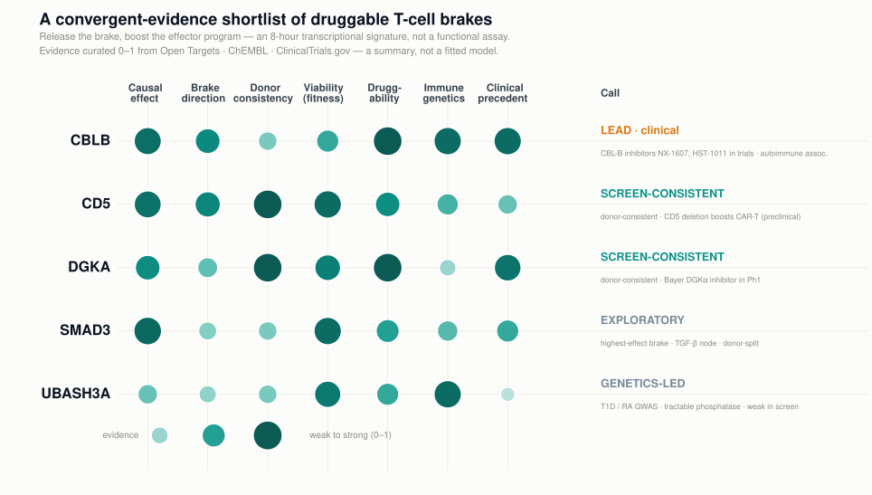
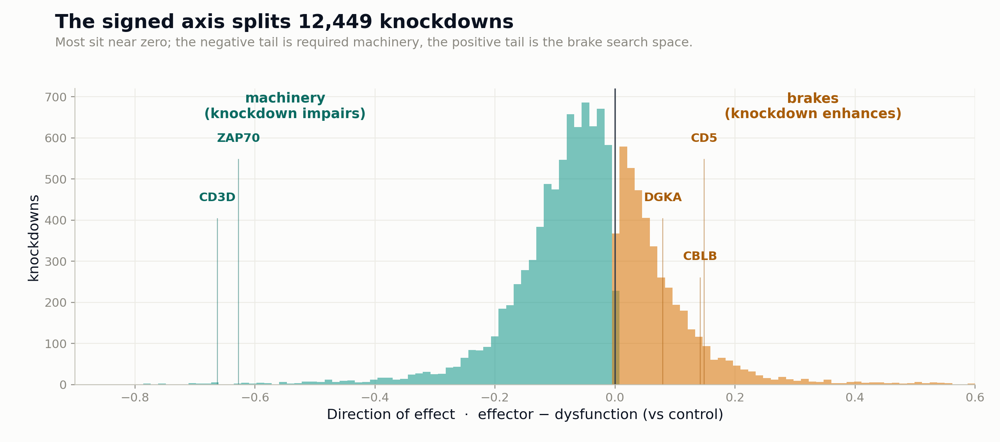
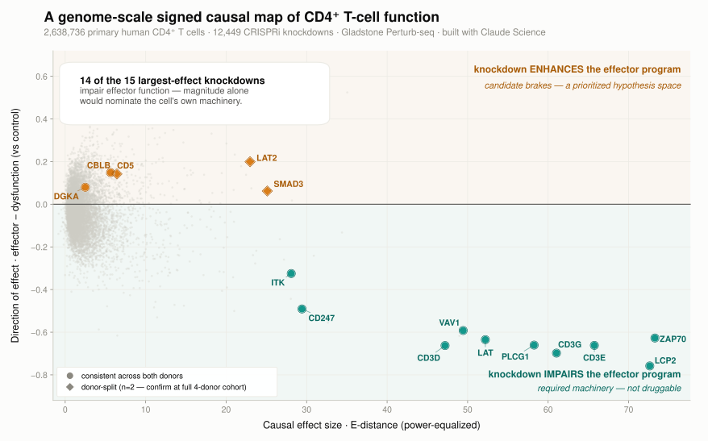
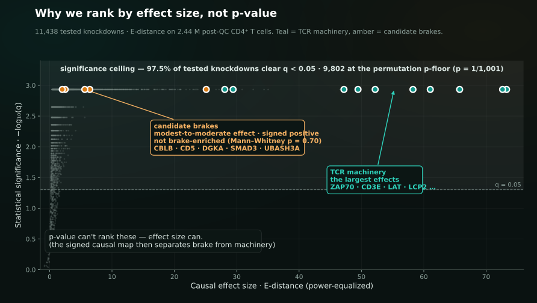
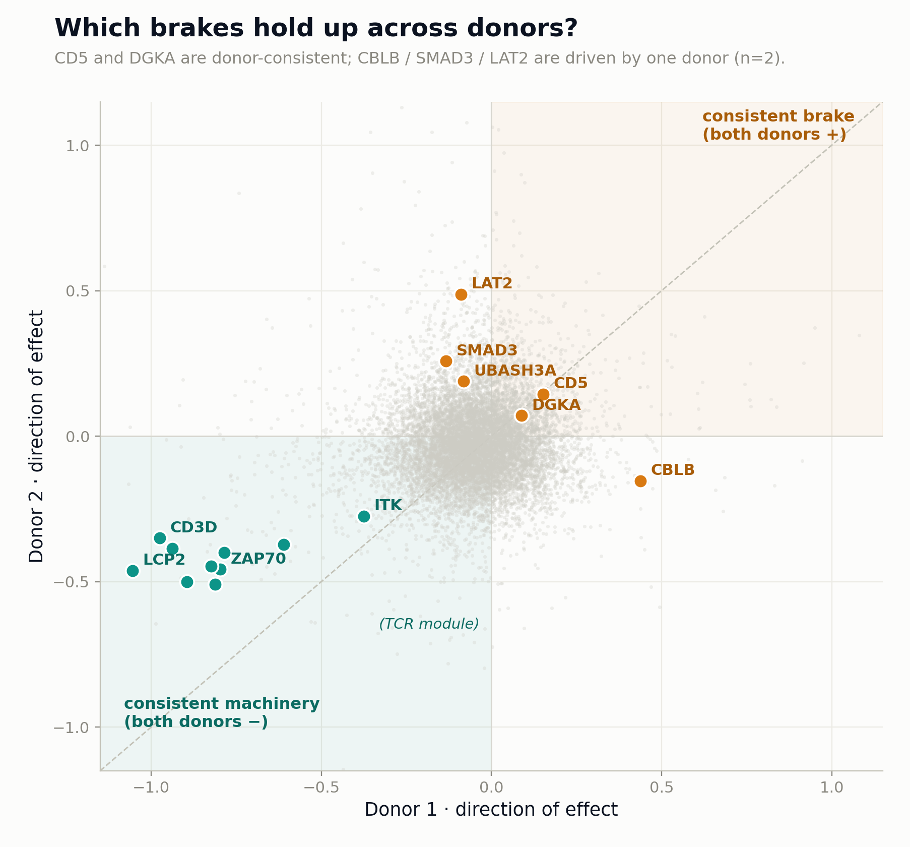

From a 2.6-million-cell CRISPRi Perturb-seq screen, Brakepoint nominates a shortlist of candidate targets whose knockdown shifts human CD4⁺ T cells toward a stronger effector transcriptional state — a brake-release strategy mechanistically analogous to checkpoint blockade — led by CBLB, whose inhibitors are in early-phase trials.
A T-cell "brake" is a gene whose knockdown shifts the cell toward a stronger effector transcriptional state; checkpoint-blockade therapy works by drugging such brakes to boost immunity. Our direction axis is an 8-hour transcriptional signature, so functional validation (cytokines, proliferation, killing) is the required next step. We score each candidate across seven evidence axes: causal effect, brake direction, donor consistency, viability, druggability, immune genetics, and clinical precedent.

Effect, direction, donor consistency and viability are computed from the genome-scale CD4⁺ leaderboard; druggability, immune-genetics and clinical precedent are curated from Open Targets, ChEMBL and ClinicalTrials.gov. Reproduce with make figure.
CBLB is an E3 ubiquitin ligase that restrains T-cell activation. Its knockdown lands in the brake quadrant in our screen, and it converges with the strongest external evidence of any candidate — which is why it's our lead.

Perturb-seq gives you 12,449 causal experiments at once — but a significance-first read-out can't separate a candidate brake from a gene the cell can't live without. Three steps do.
Each knockdown is scored by power-equalized E-distance — the size of its causal shift away from control, made comparable across coverage. The permutation test is only a gate: at this scale, 97.5% of the 11,438 tested knockdowns are "significant," so significance can't rank anything.
A per-cell effector − dysfunction score signs every knockdown. It flips the map: the largest effects are the cell's own activation machinery (knockdown cripples it, negative), and the candidate brakes surface in the positive quadrant — a noisy hypothesis space we then prioritize. An unsigned effect-size ranking leaves this direction out.
Five prior-informed candidates are then evaluated across seven axes — causal effect, direction, donor consistency, viability, druggability, immune genetics, clinical precedent — each with its evidence and its caveats made explicit.

Step 2 in one figure: magnitude (x) alone would nominate the TCR machinery; the signed axis (y) reclassifies those top effects as required and surfaces the candidate brakes within the positive quadrant.

Step 1, honestly: at this scale nearly every tested knockdown clears significance — 9,802 of the 11,438 pile at the permutation floor. Only causal effect size spreads the biology, which is why we rank by it.
This isn't a picture of the map — it's the real leaderboard, rendered from the data. Every tested knockdown is placed by its causal effect (x) and its direction (y). Search a gene, or hover to read its numbers: the TCR machinery sits negative, the candidate brakes sit positive.
x = causal effect (power-equalized E-distance) · y = direction of effect (effector − dysfunction, vs control). Loaded from data/causal_map_points.json — 11,438 tested knockdowns, exactly what the ranking sees.
Every column below is a genuine tool, and Brakepoint uses several of them as evidence layers. But for the specific job — finding a druggable brake whose knockdown makes a better effector — each has a blind spot that a signed, effect-size-ranked causal map fills.
| Traditional approach | What it gives | Blind spot for finding brakes | Brakepoint's edge |
|---|---|---|---|
| Differential expression | correlated markers of a cell state | correlation ≠ causation — can't tell a driver from a passenger | measures what a knockdown does (CRISPRi vs control), genome-wide |
| Human genetics / GWAS | disease-linked loci, in humans | rarely cell-type- or direction-resolved; mostly non-coding | direction-resolved causal effect in the target cell — genetics still folded in as a layer |
| Literature / network mining | re-weights known biology | recapitulates the known; hub-biased; buries understudied genes | ranks by measured effect, independent of publication volume |
| Bulk CRISPR (viability) | one fitness phenotype | can't separate "kills the cell" from "makes a better effector" | a full transcriptional phenotype per cell; viability is only a gate |
| Standard Perturb-seq (rank by significance / DE) | the closest competitor — same data class | at this scale 97.5% of tested knockdowns are "significant," and significance / DE-count rankings are unsigned | ranks by effect size, power-equalized, plus the signed axis that splits brake from machinery |
Honest framing: none of these is a knockout blow, and Brakepoint leans on genetics and clinical precedent — its direction score is an 8-hour transcriptional read-out that still needs functional validation. Effect-size (E-distance) ranking follows E-distance is the standard; the novelty is combining it at genome scale with a signed transcriptional axis and IO-brake prioritization. The five-gene shortlist is deliberately prior-informed, but the ranking itself is publication-independent — which is how the method can also surface understudied, genetics-led picks like UBASH3A. The edge is the combination and the rigor, not a brand-new statistic.

The machinery axis is unanimous — every evaluated TCR gene is donor-consistent. The brake side is where n=2 shows its limits: CD5 and DGKA are donor-consistent; CBLB, SMAD3 and UBASH3A are driven by one donor (as is the high-effect LAT2). As a group, known brakes are not significantly enriched in the positive quadrant (one-sided Mann–Whitney vs background over 29 curated brakes; p = 0.70). So the shortlist is a prioritized set of nominations for the full four-donor cohort — not a finished target list, and we say so.
A short walk through the question, the signed causal map, and the nominated targets — with the Claude Science provenance behind every number.
Built with Claude Science: each result is a versioned artifact, and a reviewer agent checks every claim against what ran. An adversarial self-critique pass caught a real n-dependent bias in our effect-size computation before it reached a figure. One command regenerates the shortlist and every figure from a clean clone.
# dependency-free core tests
git clone github.com/duanchengchen-oss/brakepoint
cd brakepoint/pipeline && make smoke
# regenerate the target figures
make figure
# is the brake quadrant enriched? (honest null)
python brake_enrichment.py